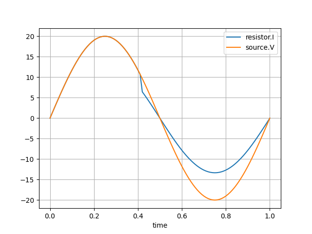

Note
Click here to download the full example code
A first example: an AC voltage source and a resistor¶
This is a simple example of how to use CoFMPy to load a co-simulation system (JSON configuration file and FMUs) and run the simulation.
The use case is a simple system with an AC voltage source and a resistor. The AC voltage source generates a sinusoidal voltage signal, and the resistor consumes the power from the source. The resistor has a variable resistance that can be changed during the simulation.

We will first download all necessary resources such as the FMUs (source and resistor) and the configuration file from the public link provided below.
import os
import urllib.request
import zipfile
url = "https://share-is.pf.irt-saintexupery.com/s/39zaG9HkQWnePbi/download"
# Local path to resources folder
resources_path = "example1.zip"
# Download and unzip the file
urllib.request.urlretrieve(url, resources_path)
with zipfile.ZipFile(resources_path, "r") as zip_ref:
zip_ref.extractall(".")
# Remove the zip file
os.remove(resources_path)
print("Resources unzipped in example1 folder!")
Out:
Resources unzipped in example1 folder!
Now that we have all the necessary resources, we can start the example.
The base object in CoFMPy is the Coordinator. It manages all the components of CoFMPy: the Master algorithm, the graph engine, the data stream handlers, etc. In this tutorial, we only deal with the Coordinator that communicates automatically with the different components.
We will first import the Coordinator object from CoFMPy and create an instance of it.
from cofmpy import Coordinator
coordinator = Coordinator()
The JSON configuration file¶
The first step is to create the JSON configuration file based on your simulation system. This file must contain the information about the FMUs, the connections between them, and the simulation settings. For more information, check the page on how to create a JSON configuration file, see this page. The system also requires input data to run the simulation (here, the variable resistor from a CSV file).
Here is the content of the configuration file for this example:
config_path = "example1/config_with_csv.json"
with open(config_path, "r") as f:
print(f.read())
Out:
{
"fmus": [
{
"id": "source",
"path": "example1/source.fmu",
"supplier": "IRT Saint Exupéry"
},
{
"id": "resistor",
"path": "example1/resistor.fmu",
"initialization": {"R": 0.5},
"supplier": "IRT Saint Exupéry"
}
],
"connections": [
{
"source": {"id": "source", "variable": "V", "unit": "V"},
"target": {"id": "resistor", "variable": "V", "unit": "V"}
},
{
"source": {
"type": "csv",
"path": "example1/resistor.csv",
"variable": "R",
"unit": "Ohm",
"interpolation": "previous"
},
"target": {"id": "resistor", "variable": "R", "unit": "Ohm"}
}
],
"loop_method": "jacobi",
"edge_sep": " -> "
}
In the JSON configuration file, you can see the following information:
- The 2 FMUs used in the system: an AC voltage source and a resistor
- 2 connections:
- the output of the source is connected to the input of the resistor
- the resistance value of the resistor is set by a CSV file
- The simulation settings: the loop solver and the edge separator (used in the graph visualization).
The next step is to load the configuration file via the Coordinator. This will start the multiple components to handle the whole simulation process:
- the Master: the main process that controls the co-simulation
- the data stream handlers: the objects that read and write data from/to the system
- the graph engine
coordinator.start(config_path)
Out:
INFO:cofmpy.config_parser:Success: found example1/source.fmu
INFO:cofmpy.config_parser:Success: found example1/resistor.fmu
Skipping Fixed Point Initialization
INFO:cofmpy.utils.interpolate:Interpolator initialized with method: previous
You can access the attributes of the components of the Coordinator object. For
example, you can access the loop solver of the co-simulation via the
master.loop_solver attribute.
# We can check the list of FMUs in the Master or the loop solver used
print("FMUs in Master:", list(coordinator.master.fmu_handlers.keys()))
print(f"Loop solver: {coordinator.master.loop_solver}")
# ... and the stream handlers (here, the CSV source). Keys are (fmu_name, var_name)
print("\nCSV data stream handler key:", list(coordinator.stream_handlers.keys())[0])
csv_data_handler = coordinator.stream_handlers[("resistor", "R")]
print("CSV path for resistance value R:", csv_data_handler.path)
print("CSV data for R (as Pandas dataframe):\n", csv_data_handler.data.head())
Out:
FMUs in Master: ['source', 'resistor']
Loop solver: jacobi
CSV data stream handler key: ('resistor', 'R')
CSV path for resistance value R: example1/resistor.csv
CSV data for R (as Pandas dataframe):
t R
0 0.00 1.0
1 0.42 1.5
You can also visualize the graph of the system using the plot_graph method. This
method will plot the connections between the FMUs in the system.
coordinator.graph_engine.plot_graph()
Running the simulation¶
After loading the configuration file, you can run the simulation by calling the
do_step method.
This method will run the simulation for a given time step via the Master algorithm.
The do_step method will save the results in the data storages defined in the
configuration file. You can access the data storages using the data_storages
attribute of the Coordinator object. By default, a data storage for all outputs is
created in the "storage/results.csv" file (see below).
print(f"Current time of the co-simulation: {coordinator.master.current_time}")
time_step = 0.01
coordinator.do_step(time_step)
print(
"Current time of the co-simulation after one step: "
f"{coordinator.master.current_time}"
)
# Run N steps
N = 100
for _ in range(N):
coordinator.do_step(time_step)
print(
f"Current time of the co-simulation after {N+1} steps: "
f"{coordinator.master.current_time:.2f}"
)
Out:
Current time of the co-simulation: 0.0
Current time of the co-simulation after one step: 0.01
Current time of the co-simulation after 101 steps: 1.01
It is possible to run the simulation until a specific end time by using the
run_simulation
method. This
method will run the simulation until the end time and return the results of the
simulation. Note that you should recreate a new Coordinator from scratch. It is not
possible to mix both do_step and run_simulation methods in the same Coordinator
object.
At the end of the simulation, you can also manually save results to a CSV file:
coordinator.save_results("simulation_results.csv")
Visualizing the results¶
Results can be accessible directly in the Master object or in the CSV file we just saved.
import pandas as pd
results = pd.read_csv("simulation_results.csv")
print(results.head(10))
Out:
time resistor.I source.V
0 0.00 0.000000 0.000000
1 0.01 1.255810 1.255810
2 0.02 2.506665 2.506665
3 0.03 3.747626 3.747626
4 0.04 4.973798 4.973798
5 0.05 6.180340 6.180340
6 0.06 7.362491 7.362491
7 0.07 8.515586 8.515586
8 0.08 9.635073 9.635073
9 0.09 10.716536 10.716536
results.plot(x="time", grid=True)

Out:
<Axes: xlabel='time'>
We can observe that the change of resistance value at t = 0.42s effectively changes the current \(I = U/R\) flowing through the resistor.
Total running time of the script: ( 0 minutes 3.229 seconds)
Download Python source code: plot_00_get_started.py